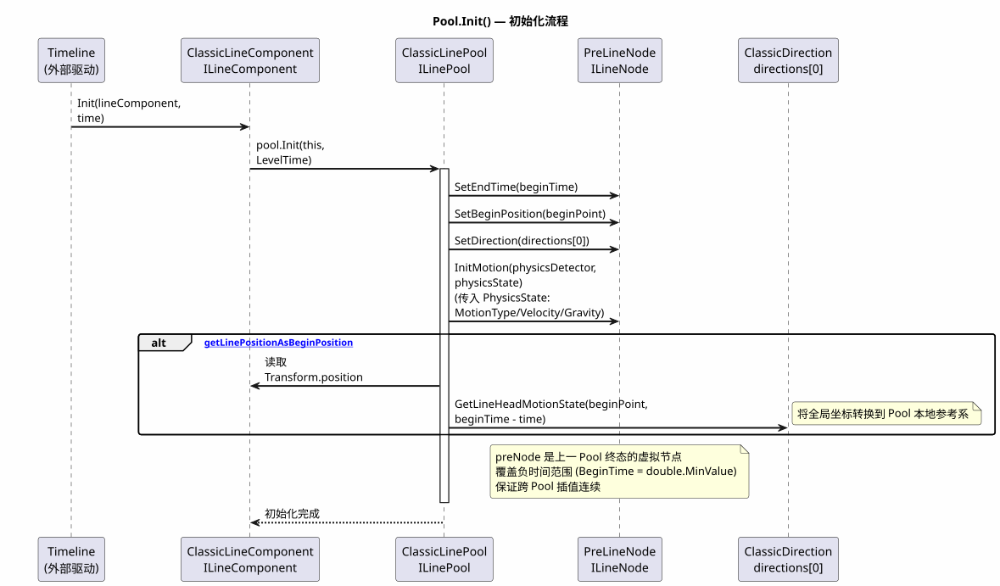
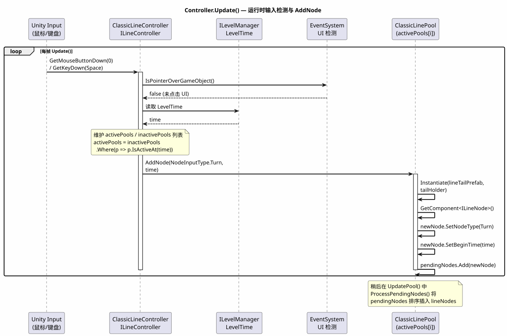
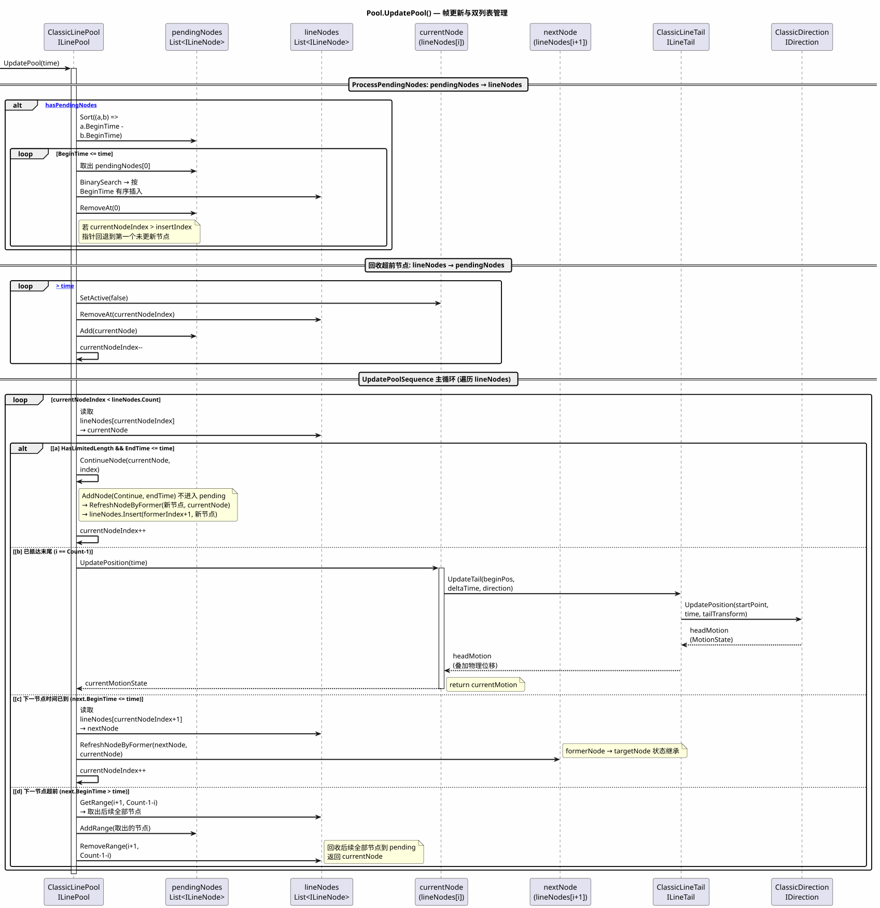
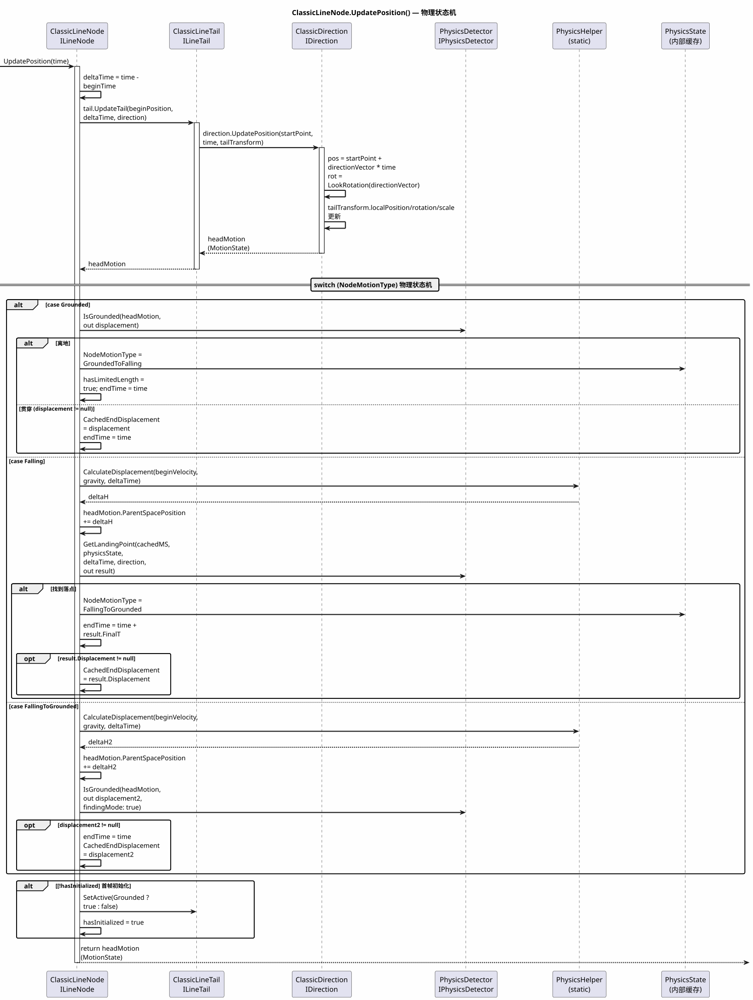
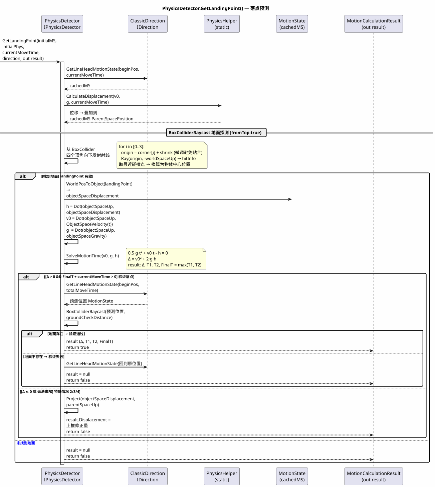
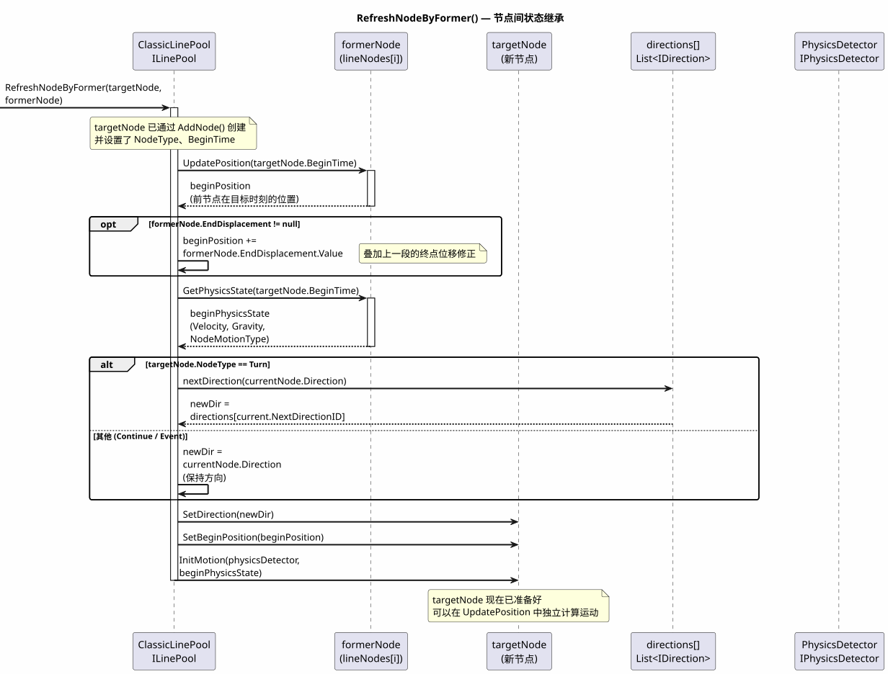
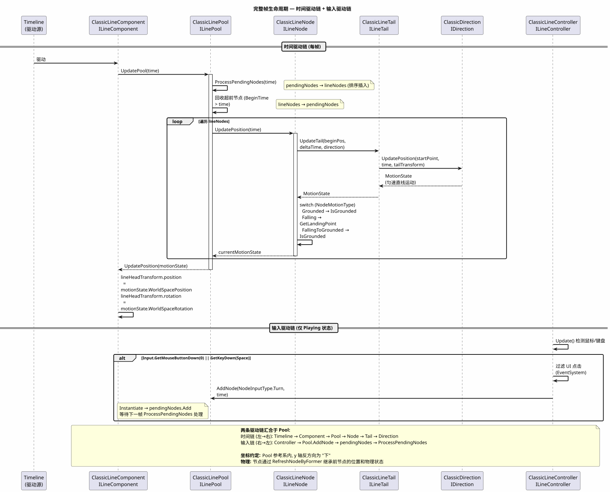

1. Pool.Init() — 初始化流程

2. Controller.Update() — 运行时输入检测与 AddNode

3. Pool.UpdatePool() — 帧更新与节点链表遍历

4. ClassicLineNode.UpdatePosition() — 物理状态机

5. PhysicsDetector.GetLandingPoint() — 落点预测

6. RefreshNodeByFormer() — 节点间状态继承

7. 完整帧生命周期 — 时间驱动链 + 输入驱动链
